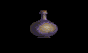
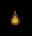

|
ALTHAFAIN'S ICER Basic Price [8]: 175.0
Enemies (6): 22 |
FROST |
|
SWORDS ONLY 50% Extra Damage |
|
FLAME ROOT OIL Basic Price [6]: 75.0
Basic Price [6]: 75.0
Enemies (15): 40 |
FROST |
|
ARMOUR ONLY Frost Immunity |
|
|
NAPHTHA  Basic Price [6]: 125.0
Enemies (8): 25 |
STEELFIRE |
|
SWORDS ONLY Double Damage |
|
DRAGON STONE Basic Price [6]: 100.0
Basic Price [6]: 100.0
Enemies (27): 76 |
STEELFIRE |
|
ARMOUR ONLY Steelfire Immunity |
|
KILLIAN'S ROOT OIL Basic Price [6]: 175.0
Basic Price [6]: 175.0
Enemies (17): 47 |
CLERICAL ENHANCEMENT #2 |
|
SWORDS: 50% Extra Damage ARMOUR: Clerical #2 Immunity |
|
CLERICAL OILCLOTH Basic Price [4]: 200.0
Basic Price [4]: 200.0
Enemies (11): 26 |
 CLERICAL ENHANCEMENT #1 |
|
SWORDS: Double Damage ARMOUR: Clerical #1 Immunity |
|
SARIG'S BANE Basic Price [8]: 150.0
Basic Price [8]: 150.0
Enemies (2): 6 |
CLERICAL ENHANCEMENT #1 / #2 |
|
ARMOUR ONLY Clerical #1 and #2 Immunity |
|
|
SILVER SPIDER Basic Price: N/A
Enemies: 0 |
POISON |
|
SWORDS & QUARRELS Extra Damage and Poisoned Condition |
|
SILVERTHORN Basic Price [8]: 175.0
Basic Price [8]: 175.0
Enemies (13): 44 |
POISON |
|
SWORDS & QUARRELS Extra Damage and Poisoned Condition |
|
SILVERTHORN ANTI-VENOM Basic Price [8]: 200.0
Basic Price [8]: 200.0
Enemies (15): 31 |
POISON |
|
ARMOUR ONLY Immunity from Poison Damage |
IMPORTANT!
Silverthorn Anti-Venom can also be ingested, and will thus effectively cure a Poisoned Condition.
|
This is an additional Sword Modification. Several Flamed Swords may be picked up from fallen enemies, but there is obviously no way for a character to actually "flame" a sword! Also, there seems to be no known Armor Modifier to counteract the damage caused by a Flamed Sword. Any information on this would be appreciated. (Some speculations may be found on the Correspondence Page under the heading of UNSOLVED MYSTERIES.)

Finally, Swords and Armor can be modified by Blessings. There are three Bless Types available from various temples. See TEMPLES for price information.
- BLESS TYPE #1 (+5%)
- Shrine of Astalon (Krondor)
- Temple of Eortis (near Silden)
- Temple of Killian (near Zun)
- Temple of Silban (near Eggley)
- Temple of Sung (near Sarth)
- BLESS TYPE #2 (+10%)
- Temple of Banath (near Prank's Stone)
- Temples of Ishap (Loriel & Sarth)
- Temple of Ruthia (near Darkmoor)
- Temple of Dala (near Eldpoint)
- Temple of Guiswa (near Harlech)
- Chapel of Ishap (Malac's Cross)
- Temple of Kahooli (Kenting Rush)
- Temple of Lims-Kragma (near Malac's Cross)
- Temple of Tith (Wolfram)
Enemies can also carry Modified Swords and Armour. However, as far as I can tell, no Enemies in the first two Chapters have Modified Swords or Armor. In Chapter 3 there is only one such Enemy, Navon (who is carrying a Poisoned Greatsword and #2 Blessed Dragon Plate Armour). In Chapter 4 (Northlands) I've only located two enemies with Modified Swords, both in the Lower Level of the Sar-Sargoth dungeons. |